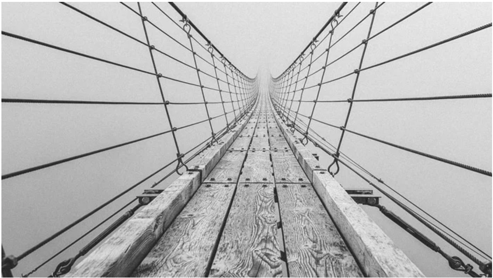
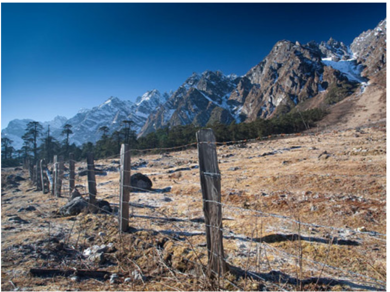
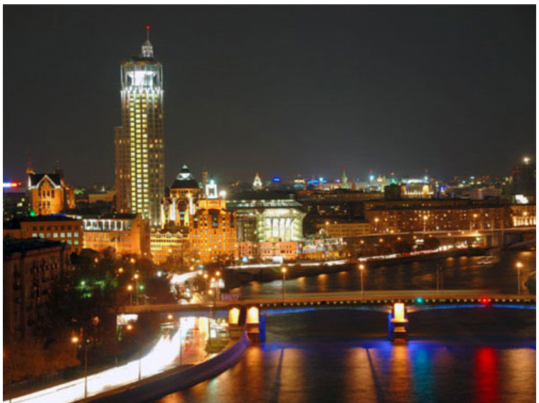
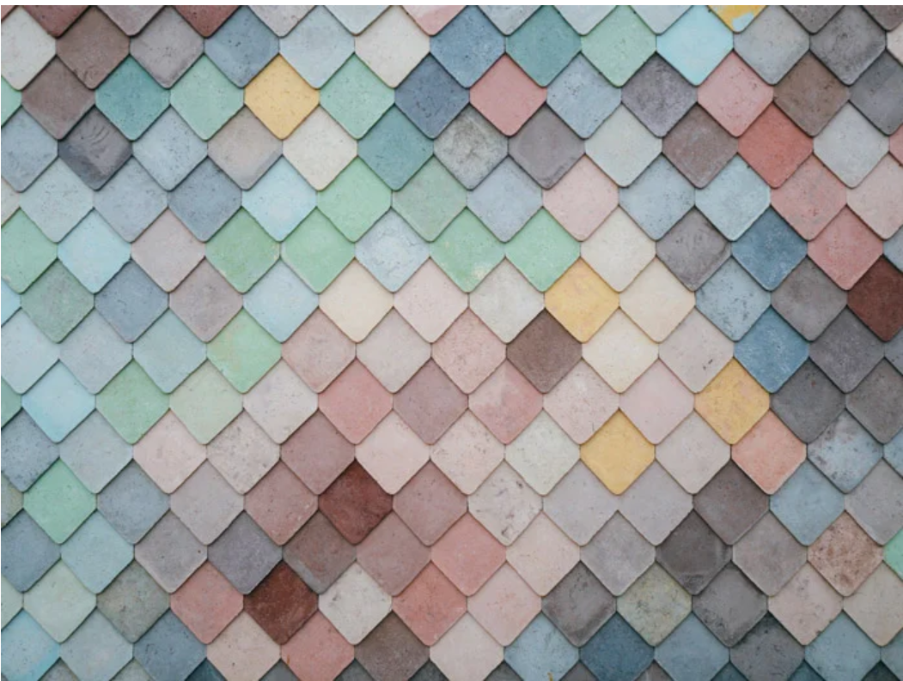
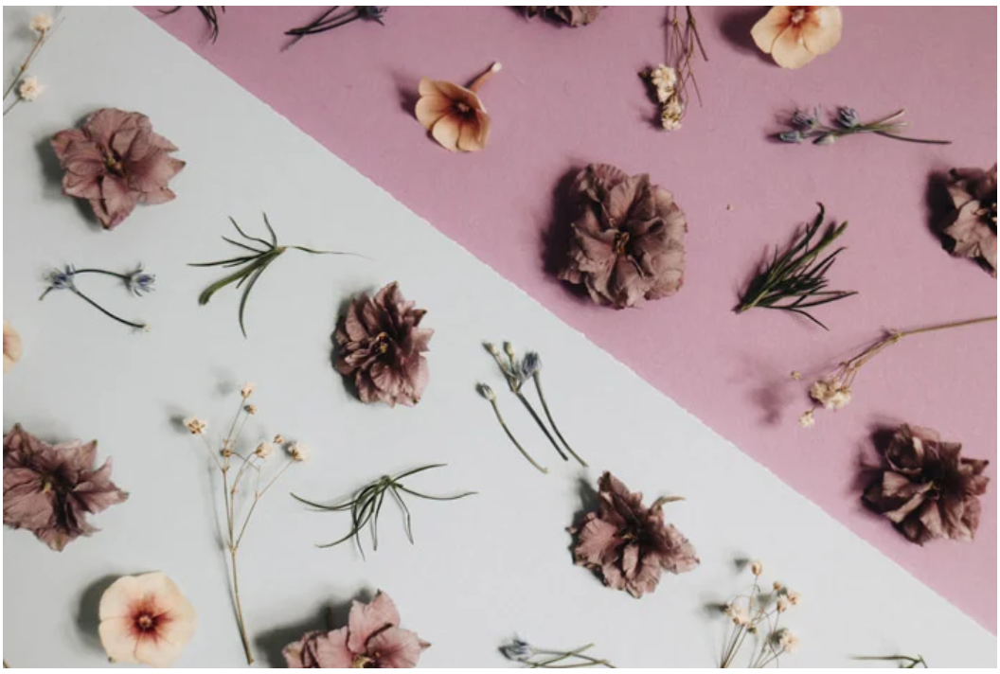

Balance
Balance is used to illustrate the visual weight of an image.
It can either unite a photograph or create division. A carefully balanced image lends a sense of stability to a photograph.
An unbalanced image creates disunity or unrest.

Landscape
Landscape mode is quite useful for shooting general scenes because in this mode,
green and blue tones will be scaled up to make the photo look more vibrant.
The camera in this mode will also choose the most appropriate opening level so that the entire scene will be sharp.

Nightmode
Night mode is the most easily "trapped". Usually, many people complain that photos taken in this mode are often shaky and blurry.
The problem is mainly due to the user not holding the device firmly enough.
So if you don't have a tripod, you need to put the device on a firm surface to avoid maximum vibration, not hand-held.

Pattern
The pattern makes sense of the visual world through regularity. From man-made objects to organic material and abstraction.
Elements of design can be organized in a predictable manner to form a pattern. Put simply, patterns are repetitions of the elements of art and design.
These work in unison within a single frame.

Rhythm
In many ways, composition in music is very similar to composition in photography.
The photographic concept of rhythm borrows heavily from music theory.
The rhythm dictates the recurring or organized (or disorganized) distribution of visual elements in an image.
Unity
Unity describes the visual relationship between elements in a photograph. It helps create a cohesive image.
Using similar colors or tones, concepts or elements cultivates a sense of unity. Disunity is the opposite.
Bad cropping, awkward perspectives, or over and underexposure disrupt an image and can cause disunity.